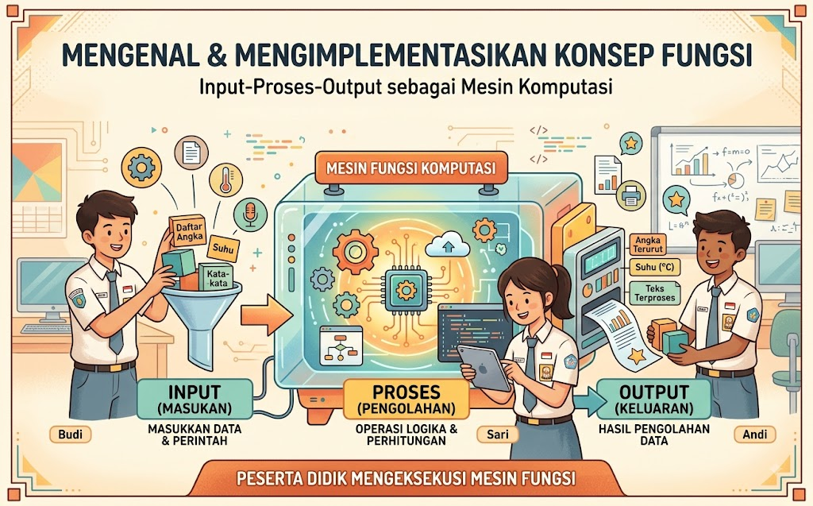
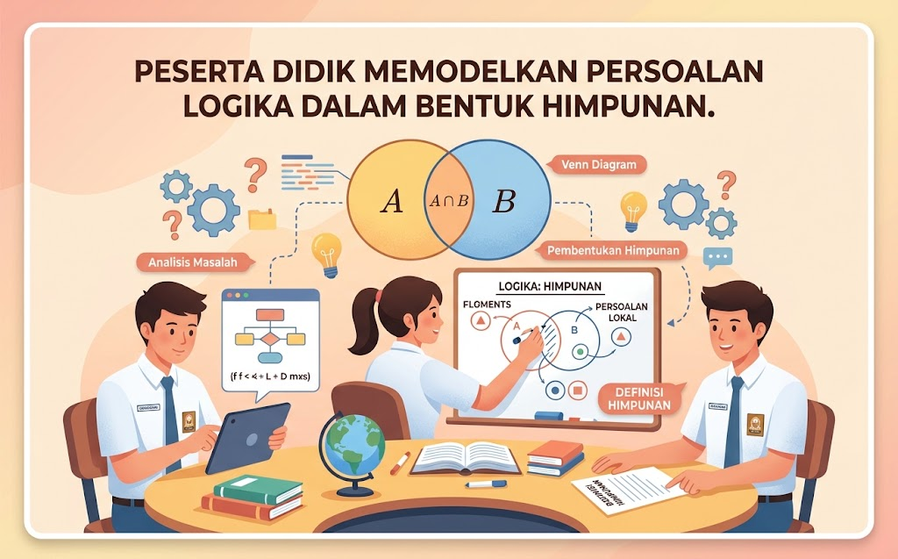
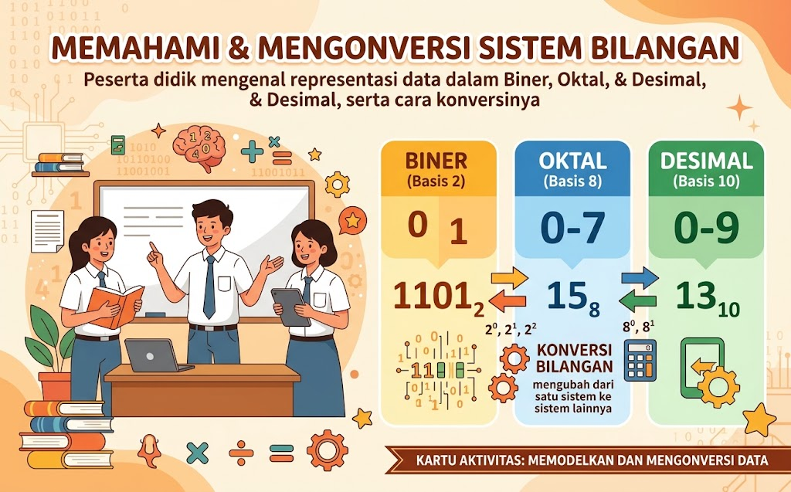

🧠 Berpikir Komputasional
Asah kemampuan berpikir logis dan sistematis melalui sembilan topik menarik. Klik kartu untuk mempelajari lebih dalam.

Selesaikan Masalah dengan Cara Cerdas (Algoritma & Data) #1
Informatika di Sekitar Kita (Relasi Kehidupan Sehari-hari) #2

Mesin Komputasi: Input → Proses → Output #3

Logika dalam Bentuk Himpunan #4

Bermain dengan Bilangan (Representasi Data) #5

Tumpukan Data: Kenalan dengan Stack #6

Pohon & Jaringan: Tree dan Graph #7

Logika Level Up (Lebih Kompleks dari Kelas VIII) #8

Asah Otak dengan Algoritma #9